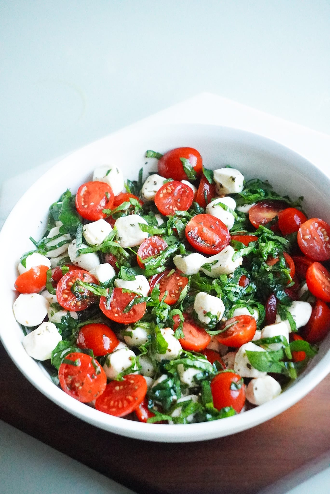

Caprese Salade
Een heerlijk en eenvoudig voorgerecht dat de smaken van verse tomaten, mozzarella, basilicum en olijfolie combineert.
Ingrediënten:
- 4 rijpe tomaten
- 200 gram verse mozzarella
- Een handvol verse basilicumblaadjes
- Extra vierge olijfolie
- Zeezout naar smaak
- Versgemalen zwarte peper naar smaak
Bereidingswijze:
- Snijd de tomaten en mozzarella in plakjes van ongeveer een halve centimeter dik.
- Rangschik de plakjes tomaat en mozzarella om en om op een schaal.
- Strooi de verse basilicumblaadjes over de schaal.
- Besproei de salade met extra vierge olijfolie.
- Breng op smaak met zeezout en versgemalen zwarte peper.
- Laat de salade een paar minuten rusten om de smaken te laten mengen.

Tip: Voor extra smaak kun je een beetje balsamicoazijn toevoegen.